01 · 광장 · 네 개의 표시
어긋난 접근 계단참, 바늘 모양 포장 틈, 삼각형 잔디·도로 조각, 건물 앞 접근면을 정리했습니다. 연속 포장면과 두 개의 식재 구획으로 교체하고 기존 중앙 계단의 높이는 보존했습니다.

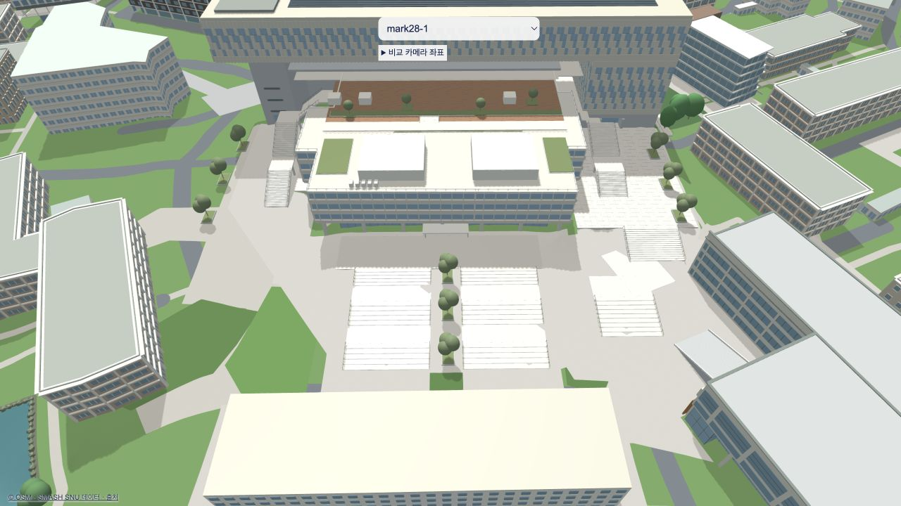

3NU / BUILD 28
관정관·본관 주변 광장과 계단, 뒤쪽 상·하부 통로만 수정했습니다. 건물의 배치·외형, 조명·색감·UI는 유지했습니다.
사용자 사진의 표시 지점에 대응하도록 비교 카메라를 마련했습니다. 각 전후 쌍의 카메라 위치·방향은 동일하며, 사용자 캡처의 구도를 픽셀 단위로 복원한 것은 아닙니다. 이 페이지에는 직접 렌더링한 화면만 포함했습니다. 이미지를 누르면 원본 크기로 볼 수 있습니다.
어긋난 접근 계단참, 바늘 모양 포장 틈, 삼각형 잔디·도로 조각, 건물 앞 접근면을 정리했습니다. 연속 포장면과 두 개의 식재 구획으로 교체하고 기존 중앙 계단의 높이는 보존했습니다.

작은 연결 판을 제거하고 계단과 옆 통로가 같은 높이로 만나는 넓은 회전 공간으로 교체했습니다. 기존 본관 벽의 윤곽을 빼고 통로 쪽 난간을 열었습니다.
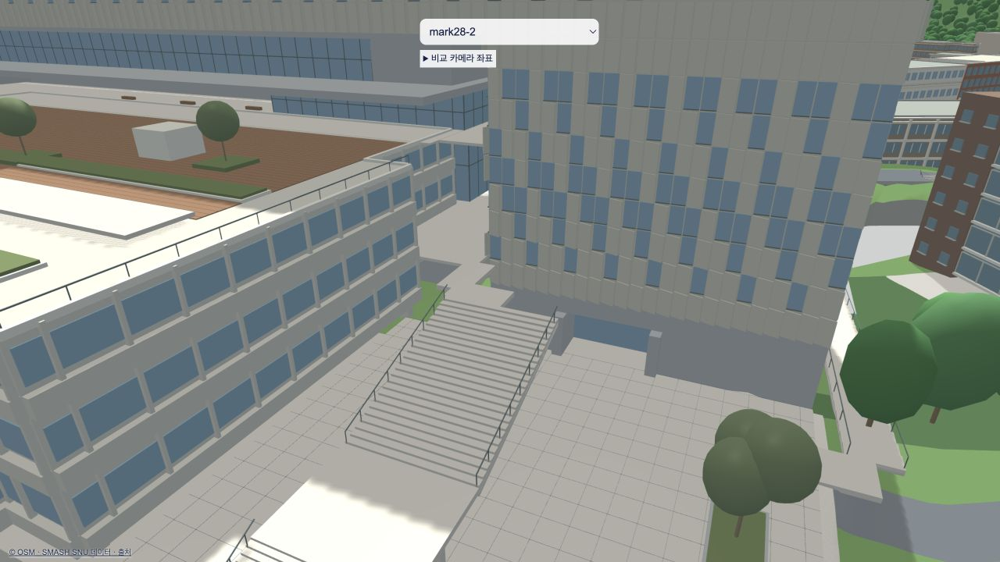
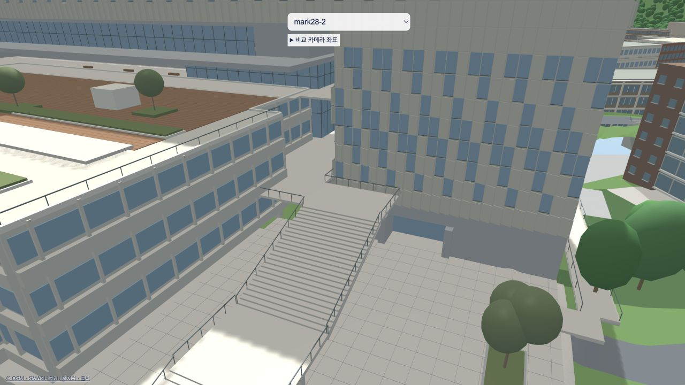
옥상 슬래브·보행면·지형의 중복을 제거했습니다. 위쪽 보행면과 아래 야외 통로는 별개의 높이로 유지하고 연결교는 보존했습니다.
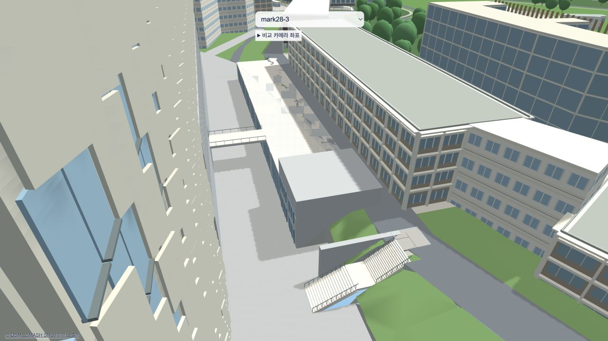
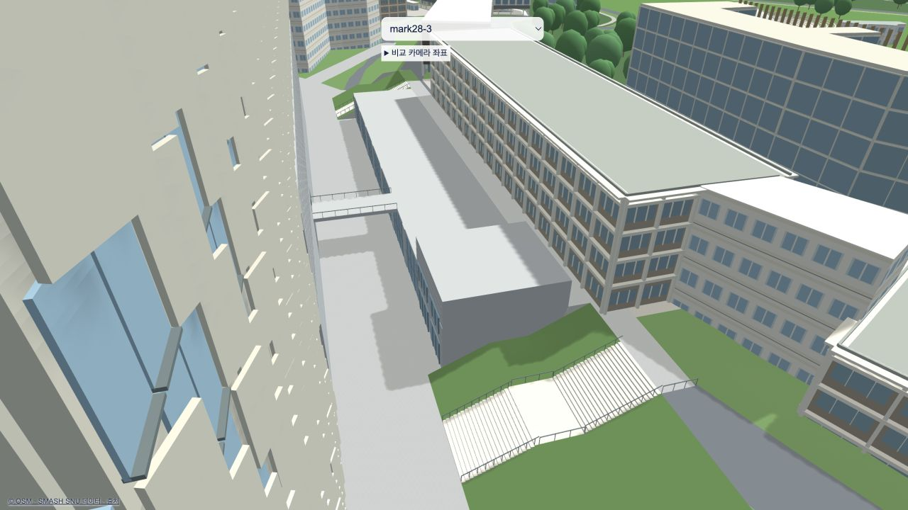
사진 3과 같은 pharmacy-near23 계단입니다. 계단을 가로지르던 도로·지형을 잘라내고 계단 밑 지면을 다시 만들었습니다. 빠져 있던 지형 경계의 옆면을 닫아 하늘색 틈을 없앴습니다.
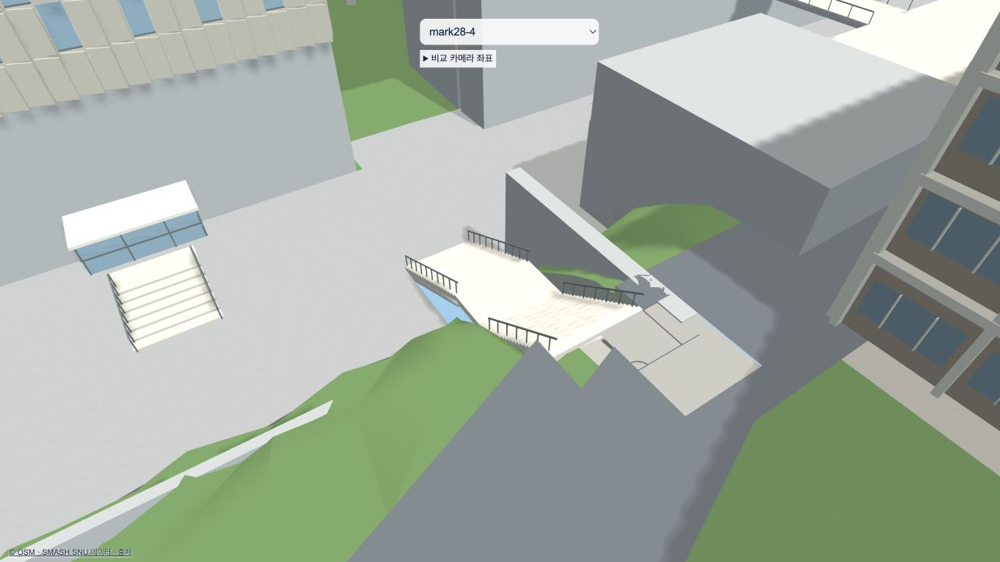

좁은 기존 계단을 폭 6m, 두 계단 구간과 깊이 5m의 중간참으로 교체했습니다. 위·아래 접속면과 주변 사면을 같은 높이 정의로 정리했습니다.
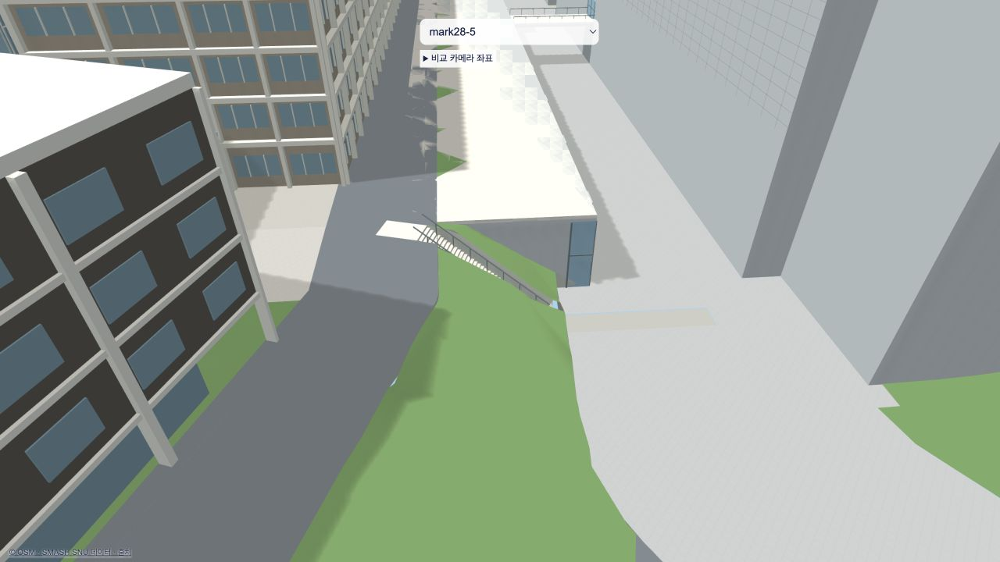
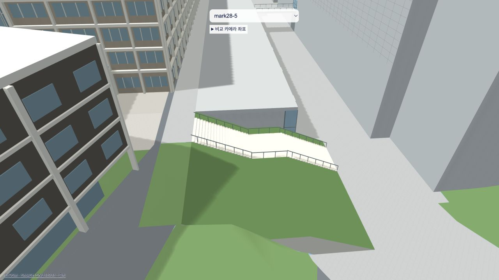
계단과 계단참의 폭·축을 맞추고 독립적으로 돌출된 윤곽을 정리했습니다. 낙차가 있는 가장자리에는 충돌이 있는 난간을 두고, 상부 계단으로 꺾이는 길은 열었습니다. 기존 아래 공간과 지지 구조는 유지했습니다.
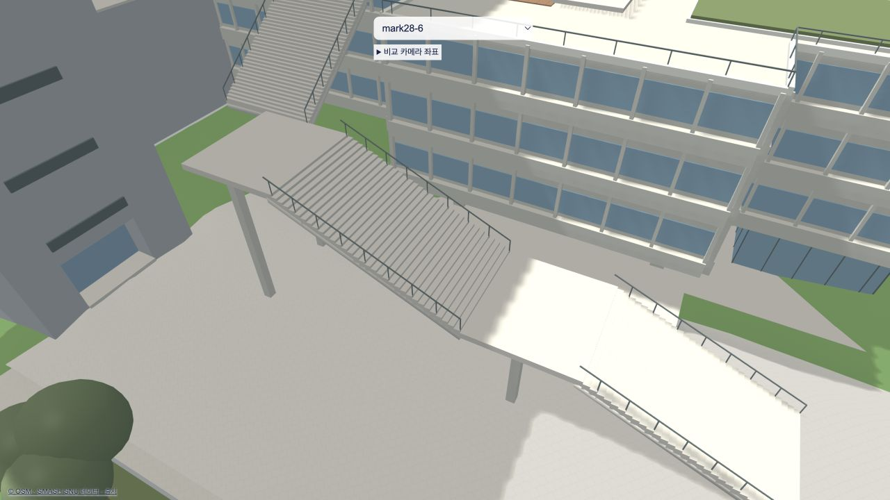

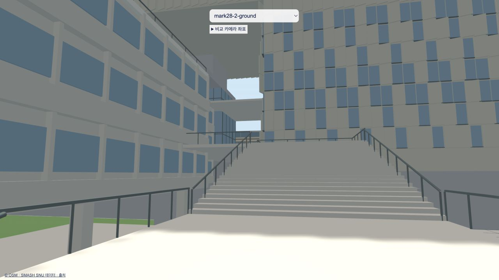
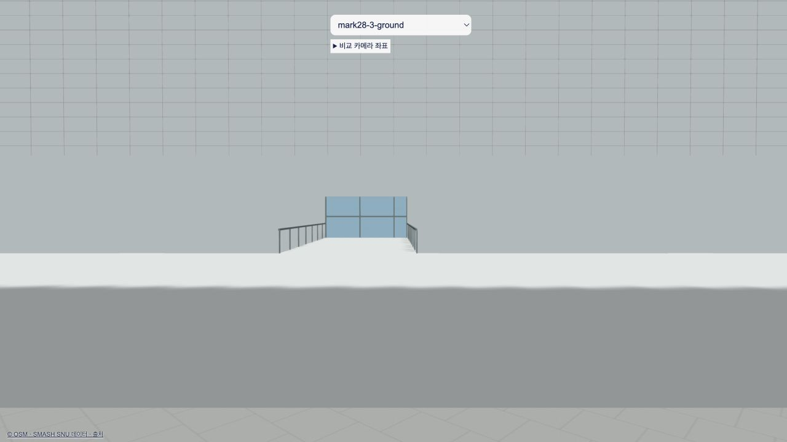
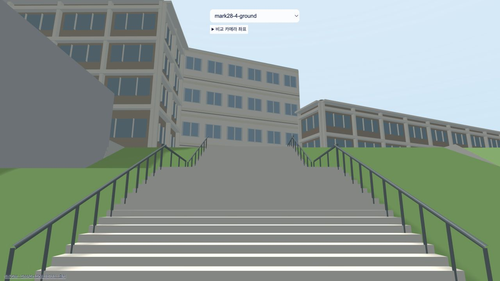
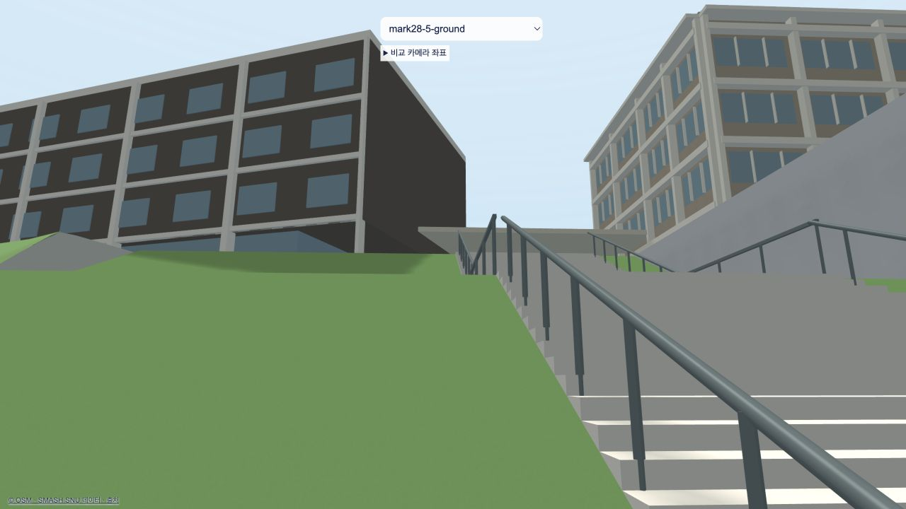
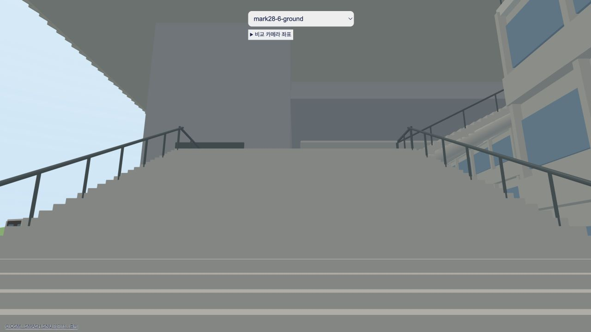
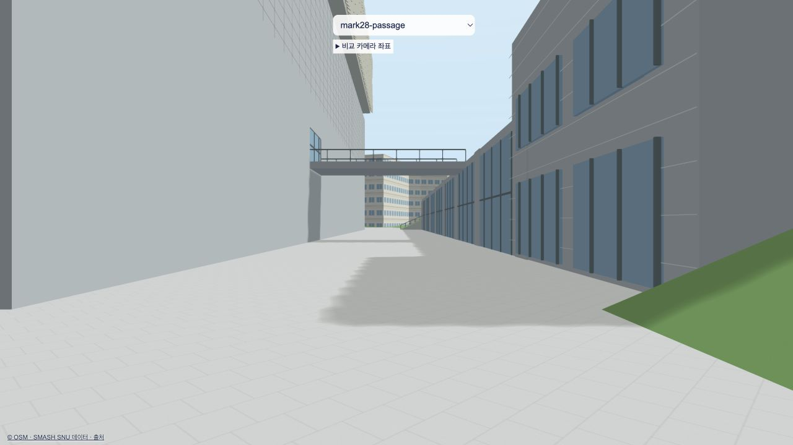
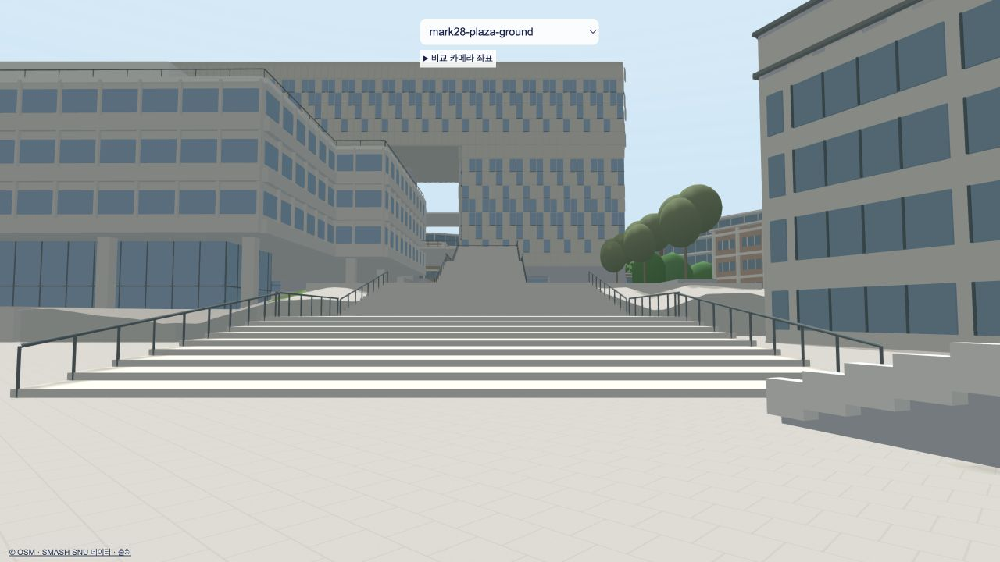
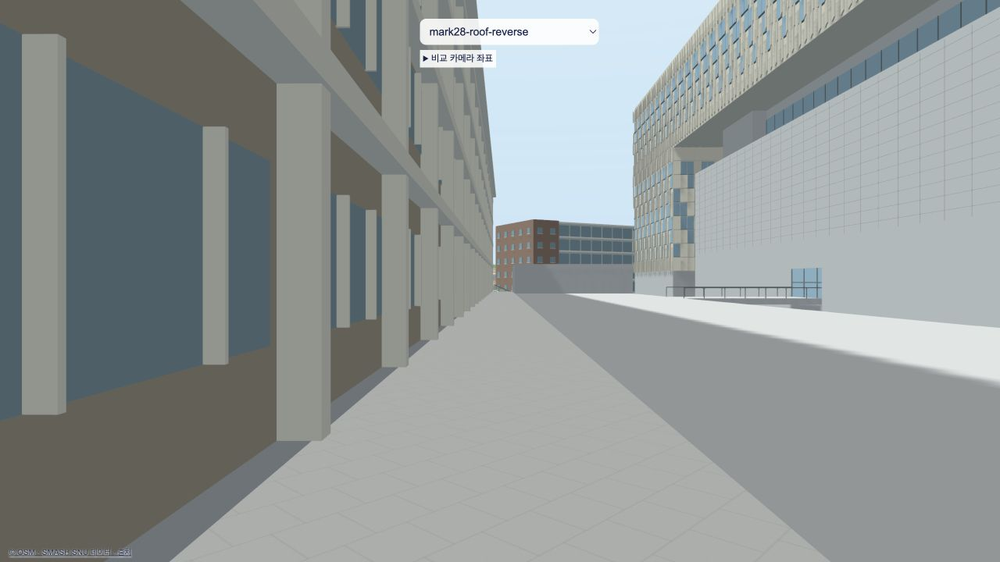
계단 폭·계단참과 국소 지면은 자연스러운 연결을 위한 설계값입니다. 실측 치수 또는 실제 캠퍼스의 정확도 수치가 아닙니다. 확인 범위는 표시한 접합부와 연결 동선이며, 모바일 Safari 실기기는 이번에 검증하지 않았습니다.